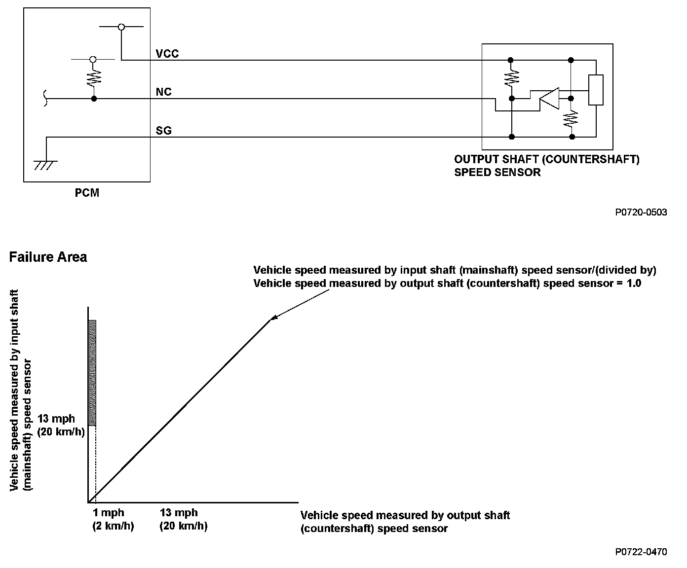
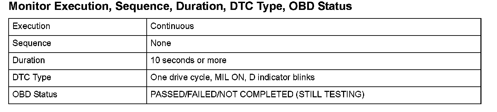
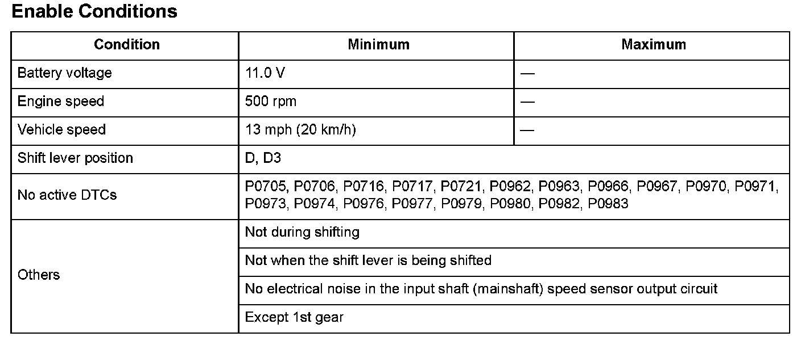

Advanced Diagnostics
DTC P0722: Problem in Output Shaft (Countershaft) Speed Sensor Circuit (No Signal Input)
General Description
The output shaft (countershaft) speed sensor is attached to the outside of the transmission housing. The output shaft (countershaft) speed sensor generates a pulsing signal according to the speed of the park gear on the output shaft (countershaft). Using that signal, the powertrain control module (PCM) determines the speed of the output shaft (countershaft). If pulse dropouts occur with the output shaft (countershaft) rotating, the PCM detects a malfunction that may be caused by an open, a temporary open, or a short to ground. Based on the correlation between the vehicle speed measured by the output shaft (countershaft) speed sensor and the input shaft (mainshaft) speed sensor, a malfunction is detected and a DTC is stored.

Monitor Execution, Sequence, Duration, DTC Type, OBD Status

Enable Conditions
Malfunction Threshold
When the vehicle speed measured by the input shaft (mainshaft) speed sensor is 13 mph (20 km/h) or more, the vehicle speed measured by the output shaft (countershaft) speed sensor is 1 mph (2 km/h) or less for at least 10 seconds.
Driving Pattern
Start the engine, and drive the vehicle at a speed of 13 mph (20 km/h) or more for at least 10 seconds.
- Drive the vehicle in this manner only if the traffic regulations and ambient conditions allow.
Diagnosis Details
Conditions for illuminating the MIL
When a malfunction is detected, the MIL comes on and the DTC and the freeze frame data are stored in the PCM memory.
Conditions for clearing the MIL
The MIL will be cleared if the malfunction does not recur during three consecutive trips in which the diagnostic runs.
The MIL, the DTC, and the freeze frame data can be cleared by using the scan tool Clear command or by disconnecting the battery.